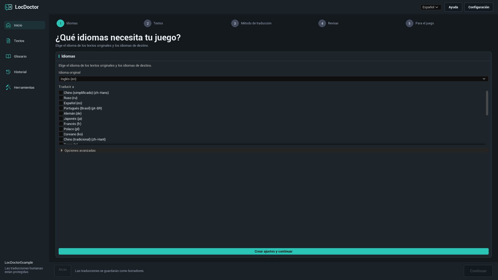
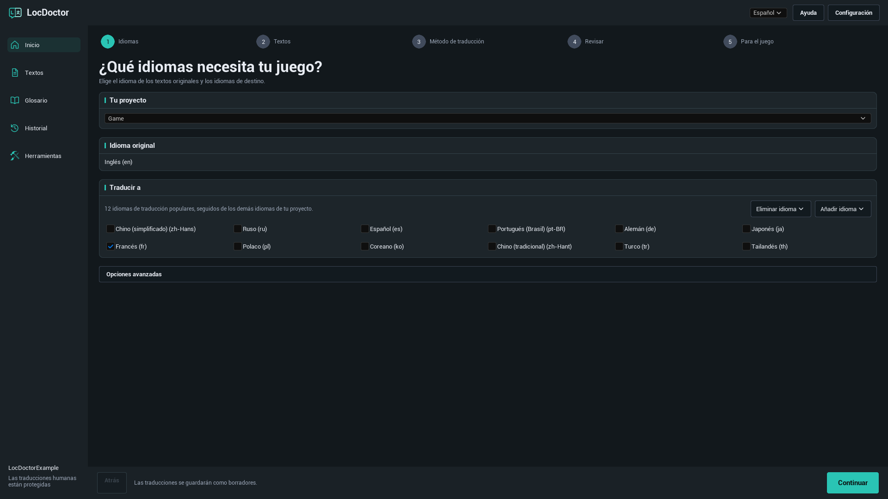
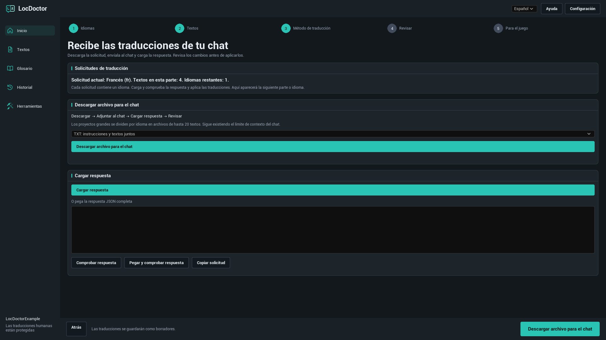
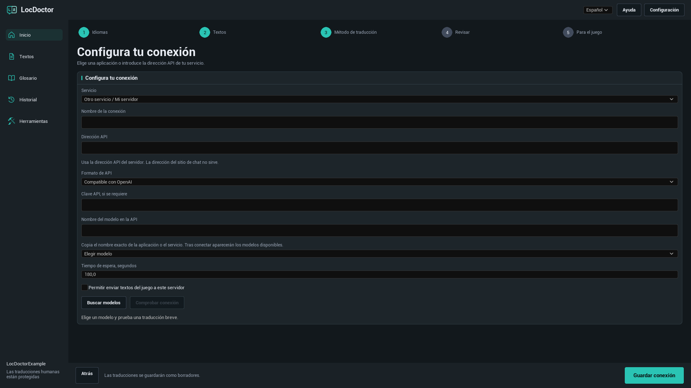
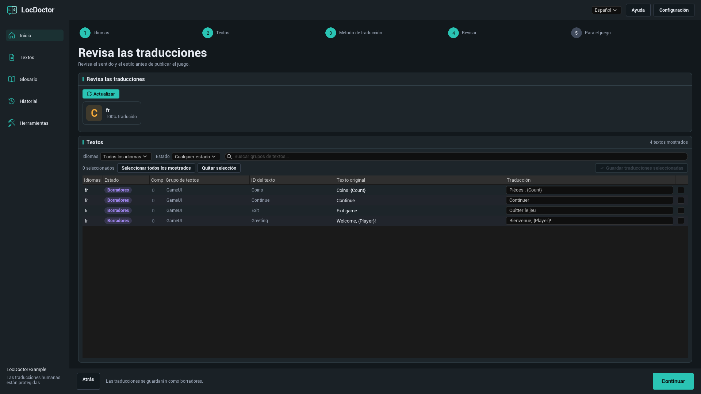
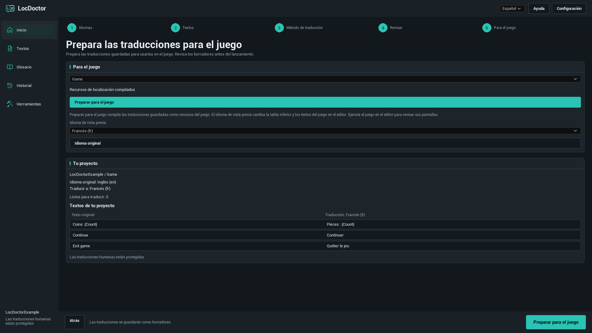

GUÍA DE USUARIO DE LOCDOCTOR 1.0.0
Traduce tu juego.
Controla cada palabra.
Traduce los textos de tu juego Unreal Engine con un modelo local, tu chat de IA o un servicio API. Revisa los resultados en el editor y prepáralos para el juego.
Elige el método que ya tienes disponible
PRIMEROS PASOS
Instalación
LocDoctor 1.0.0 es compatible con Unreal Engine 5.7 y 5.8 en Windows de 64 bits. Usa el paquete correspondiente a tu versión del motor.
Instalar desde Fab
Instala el plugin para tu versión del motor desde la biblioteca de Fab en Epic Games Launcher. Abre tu proyecto, activa LocDoctor en Edit > Plugins si es necesario y reinicia el editor.
Instalar desde un ZIP
- Cierra Unreal Editor.
- Extrae el paquete de modo que
LocDoctor.upluginquede directamente en<YourProject>/Plugins/LocDoctor/. Si el ZIP ya contiene una carpetaLocDoctor, colócala dentro dePlugins. - Abre el proyecto. Activa LocDoctor en Edit > Plugins si es necesario y reinicia el editor.
- Abre Tools > LocDoctor.
YourProject/
YourProject.uproject
Plugins/
LocDoctor/
LocDoctor.uplugin
Resources/
Source/Un paquete con archivos compilados también incluye una carpeta Binaries. Si usas un paquete que solo contiene código fuente, Unreal necesita herramientas de compilación C++ compatibles para compilar los módulos del editor.
PRIMEROS PASOS
Tu primera traducción
Empieza con un idioma y unos pocos textos del juego. Los nombres de los botones del plugin corresponden al idioma de esta guía. Los menús propios de Unreal Editor se indican en inglés.
- Elige los idiomas. Abre Tools > LocDoctor. Elige el idioma de los textos originales del juego y al menos un idioma de traducción. En el primer uso, pulsa Crear ajustes y continuar. Conserva los ajustes avanzados predeterminados salvo que tu proyecto necesite otra carpeta de recursos u otro objetivo de localización.
- Recopila los textos. En el paso Textos, pulsa Recopilar textos. Guarda los recursos modificados si Unreal lo solicita. Comprueba que el resumen del proyecto contiene los textos que esperabas.
- Elige un método. Usa En mi equipo, En mi chat o Mediante API. Para traducir automáticamente, selecciona un modelo y pulsa Comprobar conexión. Se realizará una traducción breve de prueba. Si funciona, el botón principal cambiará a Traducir textos.
- Revisa el resultado. Las traducciones de IA se guardan como borradores. En el paso Revisar, lee cada traducción, corrígela si es necesario y guarda las filas seleccionadas.
- Prepara el juego. En Para el juego, pulsa Preparar para el juego. Prueba el juego en cada idioma e inclúyelos en los ajustes de empaquetado.

Idiomas y textos del juego
Idioma original, idiomas de traducción e idioma de la interfaz
- Idioma original: el idioma en que están escritos los textos originales del juego.
- Traducir a: los idiomas de la tarea de traducción actual. Desmarca un idioma para excluirlo de esta tarea.
- Idioma de la interfaz: el selector de la parte superior de LocDoctor. Solo cambia la interfaz del plugin. El inglés es el idioma predeterminado.
Un objetivo de localización, normalmente llamado Game, contiene la configuración de localización Unreal para un conjunto de textos. Si tu proyecto tiene varios objetivos, selecciona el que quieras traducir.
Añadir o quitar un idioma

Las primeras sugerencias son 12 idiomas de traducción populares. Pulsa Añadir idioma para buscar otro idioma por nombre o código de cultura Unreal. Eliminar idioma quita un idioma de la configuración del objetivo. Los archivos de traducción se conservan para que puedas volver a añadirlo más adelante.
¿Qué textos se pueden traducir?
LocDoctor trabaja con valores FText localizables y String Tables recopilados por el sistema de localización Unreal. Los valores FString normales y los textos marcados como culture invariant no se localizan automáticamente. Busca estos casos en Herramientas > Revisión del proyecto.
MÉTODOS DE TRADUCCIÓN
En mi equipo
Usa un modelo de texto descargado en una aplicación de tu equipo. LocDoctor se conecta al servidor API de la aplicación. No instala aplicaciones ni descarga modelos.
- Instala la aplicación que prefieras. Descarga un modelo de generación de texto que quepa en la memoria de tu equipo y admita los idiomas que necesitas.
- Inicia la aplicación y activa su servidor API local. Déjala abierta mientras traduces.
- En LocDoctor, elige En mi equipo y después Elegir modelo. Pulsa Buscar modelos para actualizar la lista.
- Selecciona un modelo. Si aún no ha empezado la prueba, pulsa Comprobar conexión y espera a que termine la traducción breve de muestra.
- Cuando la conexión esté lista, pulsa Traducir textos.
Configurar la aplicación local
| Aplicación | Qué iniciar | Dirección API predeterminada |
|---|---|---|
| Ollama | Abre Ollama con un modelo de texto local descargado. Su servidor local suele iniciarse con la aplicación. | http://127.0.0.1:11434 |
| LM Studio | Abre Developer e inicia el servidor API. Pon un modelo de texto a disposición del servidor. | http://127.0.0.1:1234/v1 |
| Jan | Abre Settings > Local API Server e inicia el servidor. Si requiere una clave, introduce la misma clave en LocDoctor. | http://127.0.0.1:1337/v1LocDoctor también comprueba el puerto 6767. |
| GPT4All | Abre Settings > Application > Advanced y activa Local API Server. Carga un modelo de texto. | http://127.0.0.1:4891/v1 |
Si cambiaste el puerto, usa la dirección que muestra tu aplicación. LocDoctor solicita las listas de modelos a los servidores locales y comprueba las conexiones locales guardadas. No necesita escanear los discos ni conocer la carpeta de instalación.
Guías oficiales: OllamaLM StudioJanGPT4All
Otra aplicación o un puerto personalizado
Selecciona Otra aplicación o Otro servicio / Mi servidor en los ajustes de conexión. Introduce la Dirección API, elige Ollama o Compatible con OpenAI como formato API y escribe el nombre exacto del modelo. Servidores como llama.cpp, LocalAI o vLLM pueden funcionar si su punto de conexión admite el formato seleccionado.
MÉTODOS DE TRADUCCIÓN
En mi chat
Usa un chat de IA que acepte texto pegado o archivos adjuntos. Tú envías la solicitud y después llevas la respuesta a LocDoctor. Este método no requiere clave API.
- Elige En mi chat. El texto Solicitud actual o Primera solicitud indica el idioma y la parte de la solicitud actual.
- Pulsa Descargar archivo para el chat. Para el primer intento, elige TXT: instrucciones y textos juntos.
- Adjunta el archivo en tu chat de IA. Pídele que siga las instrucciones incluidas y devuelva la respuesta completa con las traducciones solicitadas.
- Pulsa Cargar respuesta para importar el archivo de respuesta. También puedes pegar la respuesta JSON completa en el campo correspondiente y pulsar Comprobar respuesta, o usar Pegar y comprobar respuesta.
- Lee la vista previa. Si se superan todas las comprobaciones, pulsa Aplicar traducciones. Las traducciones se guardan como borradores.
- Descarga o copia la siguiente solicitud y repite hasta que no queden solicitudes pendientes. Después revisa las traducciones.
¿Qué formato de archivo debo usar?

| Formato | Uso recomendado | Qué adjuntar |
|---|---|---|
| TXT | Un primer intento sencillo. | Un archivo con instrucciones y textos. |
| JSON | Un chat o herramienta que trabaje bien con datos estructurados. | La solicitud JSON con sus instrucciones. |
| CSV | Una tabla que quieras consultar o compartir. | El CSV y su archivo de instrucciones separado. |
La respuesta puede ser JSON, TXT con la respuesta JSON completa o CSV con las columnas batch, culture, i y t. Usa Copiar solicitud si tu chat no admite adjuntos. Enviar un archivo no elimina los límites de contexto ni de carga del chat.
¿Qué se comprueba en la respuesta?
LocDoctor comprueba el identificador de solicitud, el idioma, los identificadores de texto y los marcadores de formato. Cada elemento solicitado debe aparecer exactamente una vez. Los textos del juego y el glosario deben seguir coincidiendo con la solicitud exportada.
Si cambiaste el texto original, una traducción o el glosario después de exportar, crea una nueva solicitud. Si la respuesta está incompleta o modifica un marcador, pide al chat que la corrija. La solicitud activa se guarda localmente en el proyecto para continuar tras volver a abrir el editor.
MÉTODOS DE TRADUCCIÓN
Mediante API
LocDoctor envía automáticamente las solicitudes al servicio configurado. Crea una clave API en tu cuenta de ese servicio y comprueba la disponibilidad del modelo y la facturación antes de empezar.
- Elige Mediante API. Selecciona un servicio preconfigurado como OpenRouter, OpenAI, Google Gemini o Groq.
- Abre Opciones avanzadas. Introduce tu Clave API, si se requiere. Para otro servicio, selecciona Otro servicio / Mi servidor y escribe la dirección API y el formato que indique su documentación.
- Pulsa Buscar modelos y elige un modelo. Si el servicio no ofrece una lista, introduce el Nombre del modelo en la API exacto.
- Para un servidor externo a este equipo, activa Permitir enviar textos del juego a este servidor.
- Pulsa Comprobar conexión y espera a que termine la traducción breve de prueba. Si funciona, pulsa Traducir textos.
Conexión con otro servicio

| Campo | Qué introducir |
|---|---|
| Nombre de la conexión | Un nombre reconocible, por ejemplo Servidor de traducción del equipo. |
| Dirección API | La dirección base que indique la documentación de la API, por ejemplo https://openrouter.ai/api/v1. La URL de una web de chat no sirve. |
| Formato API | Compatible con OpenAI para un punto de conexión Chat Completions compatible, u Ollama para una API Ollama. Los formatos API no admitidos necesitan una integración independiente. |
| Clave API | La clave proporcionada por el servicio o servidor, si la requiere. |
| Nombre del modelo en la API | El identificador exacto que espera el servidor. El nombre mostrado en una web puede ser distinto. |
| Tiempo de espera, segundos | Un valor entre 1 y 600. Auméntalo para modelos o servidores lentos. |
Las claves API se guardan en los ajustes locales de usuario, dentro de Saved/Config del proyecto. Estos ajustes no están cifrados. Las claves se excluyen de las solicitudes para chat, del historial de traducción y de los informes de LocDoctor.
REVISIÓN Y PUBLICACIÓN
Revisar traducciones
Las traducciones de IA empiezan como Borradores. Las comprobaciones automáticas ayudan a conservar el formato, pero debes revisar el significado, el tono y el contexto.
- Abre el paso Revisar o la página Textos. Pulsa Actualizar si hace falta.
- Usa los filtros de idioma y estado para reducir la lista. La revisión guiada muestra los idiomas de traducción seleccionados.
- Compara el original y la traducción. Corrige el campo de traducción cuando sea necesario. Revisa nombres, terminología, marcadores, saltos de línea y problemas detectados.
- Selecciona las filas que quieras guardar y pulsa Guardar traducciones seleccionadas.
- Antes de publicar, comprueba las pantallas traducidas del juego.
| Estado | Significado |
|---|---|
| Sin traducir | No hay una traducción guardada para este texto e idioma. |
| Borradores | Hay una traducción de IA guardada que necesita revisión. |
| Revisado | La traducción se ha marcado como revisada. |
| Traducción humana | Una traducción humana está protegida frente a la sustitución automática habitual. |
| Traducciones desactualizadas | El texto original ha cambiado desde que se tradujo. Compara la traducción con el texto actual. |
Entender el contador de progreso

El progreso cuenta pares de texto e idioma. Un texto original traducido a cuatro idiomas supone cuatro tareas. Procesado indica cuántas tareas se han procesado. Consulta los resultados guardados y los errores para saber cuáles se completaron correctamente.
Detener la traducción automática conserva los resultados completados. Puedes reanudar el trabajo pendiente cuando haya una tarea guardada disponible. Las tareas automáticas habituales protegen las traducciones humanas existentes.
Marcadores de formato
Conserva las variables como {Player} y {Count}, las etiquetas Rich Text y los saltos de línea. Las solicitudes para chat pueden sustituir el formato por tokens protegidos como ⟦LD0⟧. El modelo debe copiarlos exactamente. LocDoctor restaura el formato original al aplicar una respuesta válida.
Las expresiones complejas de plural y género requieren revisión manual. Traduce el texto de cada rama sin cambiar la estructura de la expresión.
Glosario e historial
Mantén una terminología coherente
- Abre Glosario y pulsa Añadir.
- Introduce un término. Elige No traducir para conservar un nombre o Traducción obligatoria para definir una traducción exacta.
- Define las traducciones de los idiomas necesarios y activa la distinción entre mayúsculas y minúsculas si corresponde.
- Pulsa Guardar antes de preparar nuevas solicitudes.
Por ejemplo, conserva el nombre de un personaje o establece una traducción coherente de un término del juego en cada idioma. El glosario se incluye en las nuevas solicitudes. Modificarlo puede invalidar una solicitud para chat ya exportada.
Restaurar un cambio anterior
Abre Historial, busca el lote guardado por objetivo, idioma y fecha, y pulsa Restaurar. LocDoctor comprueba si hay cambios posteriores antes de restaurar datos antiguos. Si hay conflictos, revisa esos cambios primero.
Si se interrumpió una escritura, puede aparecer Restaurar cambios interrumpidos al volver a abrir. Usa Restaurar para recuperar los archivos originales guardados antes de continuar.
REVISIÓN Y PUBLICACIÓN
Preparar para el juego
Este paso compila las traducciones guardadas en recursos de localización Unreal. El juego final utiliza esos recursos. La interfaz de editor de LocDoctor no se ejecuta en el juego distribuido.
- Termina de revisar las traducciones que vas a publicar.
- Abre Para el juego, selecciona el objetivo de localización y pulsa Preparar para el juego. Espera al mensaje Recursos de localización compilados.
- Selecciona un Idioma de vista previa. Se actualizarán el ejemplo de texto del proyecto y los textos localizados del juego en el editor. Ejecuta el juego en el editor y comprueba sus pantallas.
- Pulsa Idioma original para finalizar la vista previa.
- Abre Project Settings > Packaging > Localizations to Package e incluye todos los idiomas que vas a publicar. Comprueba que los ajustes de internacionalización contienen sus datos y prueba una compilación empaquetada.
Vuelve a compilar después de guardar nuevas traducciones. Si un idioma funciona en el editor pero no en el juego empaquetado, comprueba que sus recursos de localización y datos de cultura están incluidos.

Si faltan caracteres o aparecen cuadrados, abre Herramientas > Fuentes. Comprueba las fuentes del juego y las fuentes alternativas para ese idioma.
Herramientas e intercambio de archivos
Revisión del proyecto
Abre Herramientas > Revisión del proyecto y ejecuta una revisión. Inspecciona los lugares señalados: cadenas escritas directamente en código, textos culture invariant, claves en conflicto o frases ensambladas con fragmentos pueden impedir la localización. La primera revisión puede tardar más mientras Unreal carga recursos.
Fuentes
Abre Herramientas > Fuentes para comprobar que las fuentes elegidas contienen los caracteres de tus traducciones. Revisa los caracteres ausentes y las comprobaciones incompletas, y prueba después las pantallas reales del juego.
Trabajar con un traductor
Abre Herramientas > Importar y exportar para intercambiar traducciones mediante archivos CSV o PO.
- Exporta el objetivo y el idioma seleccionados en el formato necesario.
- El traductor debe modificar las traducciones y conservar los identificadores, textos originales y marcadores.
- Importa el archivo recibido y revisa los cambios propuestos.
- Resuelve los conflictos con Conservar traducciones del proyecto o Usar traducciones del archivo y pulsa Guardar traducciones importadas.
Los CSV de solicitud para chat y de intercambio con traductores sirven para tareas distintas. Importa la respuesta del chat desde En mi chat > Cargar respuesta. Esta versión no admite XLSX ni XLIFF.
Solución de problemas
LocDoctor no aparece en Tools
Busca y activa LocDoctor en Edit > Plugins y reinicia el editor. Si falta en la lista de plugins, comprueba la carpeta de instalación y el paquete para tu versión del motor. Con un paquete de código fuente, instala las herramientas C++ compatibles con Unreal y compila el objetivo del editor.
No se ha recopilado ningún texto
Guarda los recursos del juego, comprueba la carpeta de recopilación del objetivo y repite la recopilación. Los textos deben ser FText localizables o String Tables e incluirse en la configuración de recopilación Unreal. Ejecuta Herramientas > Revisión del proyecto para detectar cadenas escritas directamente en código y textos no localizables.
No está disponible la traducción de textos
Elige al menos un idioma de traducción y recopila los textos. Para métodos automáticos, selecciona un modelo y completa primero Comprobar conexión. Si no quedan textos pendientes, edita traducciones existentes en Textos o recopila nuevos textos y selecciona otro idioma.
La lista de modelos locales está vacía
Deja abierta la aplicación, activa su servidor API local e instala o carga un modelo de texto. Comprueba la dirección API y el puerto. Para un servidor personalizado, escribe el nombre exacto del modelo en los ajustes avanzados. Tener instalada una aplicación no significa que su servidor API esté activo.
Se agota el tiempo de la prueba de conexión
Deja que el modelo local se cargue, cierra otras aplicaciones que consuman memoria de vídeo o usa un modelo más pequeño. Aumenta Tiempo de espera, segundos. Si el servidor nunca responde, comprueba la dirección, el puerto y si un proxy del sistema redirige las solicitudes localhost.
La API devuelve 401 o 403
Comprueba que la clave pertenece al servicio elegido, sigue siendo válida y permite usar el modelo. Para un servidor local con autenticación, usa la clave de los ajustes de su servidor API.
La API devuelve 429 o un error de modelo
Espera antes de repetir o elige otro modelo disponible. Comprueba los límites de la cuenta y la disponibilidad del modelo en el servicio. Obtener la lista de modelos no garantiza que el servicio pueda traducir.
La solicitud para chat contiene solo uno de mis idiomas
Es lo previsto. Cada solicitud contiene un idioma y hasta 20 textos. Carga, comprueba y aplica la respuesta, y prepara la siguiente solicitud. El idioma actual o siguiente se muestra encima de los controles de archivos.
Se ha rechazado la respuesta del chat
Usa la respuesta completa a la solicitud activa. Pide al chat que devuelva cada elemento exactamente una vez y conserve los valores batch y culture y todos los marcadores. Si cambiaste textos o el glosario después de exportar, crea una nueva solicitud.
Cambiar el idioma de vista previa no cambia el juego
Guarda las traducciones y pulsa primero Preparar para el juego. Comprueba que el objetivo elegido tiene traducciones para ese idioma. La vista previa afecta a los textos localizados del juego, no a los menús de Unreal Editor. Las cadenas normales y los textos no recopilados no cambiarán.
Falta un idioma en el juego empaquetado
Compila las últimas traducciones guardadas. Añade el idioma en Project Settings > Packaging > Localizations to Package e incluye sus datos de cultura en los ajustes de internacionalización. Prueba una nueva compilación empaquetada.
Los caracteres traducidos aparecen como cuadrados
Comprueba la fuente del juego y sus fuentes alternativas para el idioma afectado. Usa Herramientas > Fuentes para revisar los caracteres disponibles y prueba los widgets y pantallas reales.
Preguntas frecuentes
¿Necesito una suscripción de IA de pago?
LocDoctor no incluye suscripción. Usa un modelo local, tu propio acceso al chat o el acceso API de tu servicio. La disponibilidad, los límites y los costes dependen de la aplicación o el servicio elegido.
¿La traducción local funciona sin Internet?
Sí, si el modelo ya está descargado y funciona localmente. Puedes necesitar Internet para descargar la aplicación y el modelo. Un modelo alojado en la nube sigue usando su proveedor, aunque la aplicación esté en tu equipo.
¿LocDoctor traduce imágenes, voz o subtítulos de vídeo?
Traduce los textos localizables del juego recopilados por Unreal. El texto de las imágenes, el audio y los subtítulos necesitan sus propios textos originales y un tratamiento independiente.
¿Quitar un idioma elimina sus traducciones?
No. Eliminar idioma quita el idioma de la configuración del objetivo, pero conserva los archivos de traducción. Desmarcarlo solo lo excluye de la tarea actual.
¿Qué idiomas de interfaz hay disponibles?
Inglés, ruso, alemán, francés, español, portugués de Brasil, chino simplificado, japonés y coreano. Los idiomas de traducción del juego se configuran aparte.
¿El juego publicado necesita LocDoctor o una conexión de IA?
El plugin se usa en Unreal Editor. El juego final usa los recursos de localización compilados de Unreal. Jugar no necesita el modelo de traducción ni el servicio.
Versión y soporte
Esta guía corresponde a LocDoctor 1.0.0 para Unreal Engine 5.7 y 5.8 en Windows de 64 bits.
1.0.0
Traducción de textos del juego con modelos locales, archivos para chat y API compatibles. Configuración de idiomas, revisión de borradores, glosario, historial, compilación de localización, revisión del proyecto y de fuentes, intercambio CSV / PO.
Cómo informar de un problema
Contacta con soporte: nexusforgeuesupport@gmail.com.
Indica las versiones de Unreal Engine y LocDoctor, el método de traducción y el mensaje de error exacto. Para problemas de conexión, añade la aplicación o servicio y el modelo. Una captura a tamaño completo ayuda a mostrar el paso actual.
Elimina las claves API y otros datos privados de las capturas y los registros antes de compartirlos.